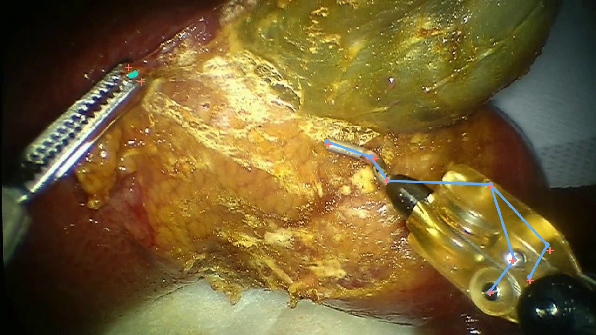
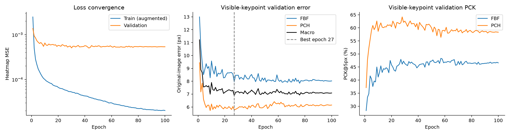
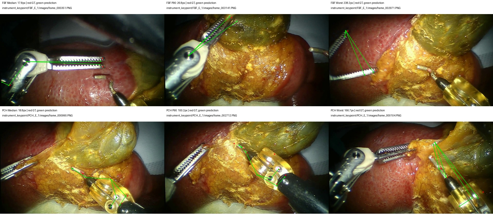

预训练到器械关键点
加载 ViTPose++-Base 预训练权重，保留共享编码器与解码器。新增两个器械专家，分别输出 FBF 五点与 PCH 八点。
把真实手术场景中的二维预测，变成可以播放、比较与逐帧检查的实验记录。

两类器械等权宏平均
FBF 2,892 / PCH 3,257
选择时未使用测试结果
切换预测与标注，沿着钳尖轨迹
观察定位的稳定性与失配。
↳ 关于展示片段依据连续窗口的误差分位选择，包含相对稳定、典型和困难情况。页面全部指标来自完整有效测试集，而非展示片段。片段来源与选择规则 ↗
| 集合 / 器械 | 平均误差 | PCK@5 | PCK@10 |
|---|---|---|---|
| 载入完整实验指标… | |||
PCK@5 / @10：误差不超过 5 / 10 个原图像素的可见点比例。使用 GT 框，尚未计入检测器误差。
验证集 → 独立操作场景测试集
模型已经学会训练场景中的定位；新的组织背景、朝向与遮挡仍会产生明显失配。
PCH 可见点的中位误差为 7.60px，同时有 22.6% 的可见点误差超过 50px。单一均值无法描述全部表现。
A BASELINE FOR THE NEXT EXPERIMENT ↗
红色为标注，绿色为预测。
每类展示中位、P90 和最差实例。

打开原尺寸图 ↗加载 ViTPose++-Base 预训练权重，保留共享编码器与解码器。新增两个器械专家，分别输出 FBF 五点与 PCH 八点。
此处“轨迹”由连续帧的二维关键点估计连接而成。器械框和身份来自标注；未训练独立时序跟踪模块，也未评估 IDF1、HOTA 或遮挡恢复。
FBF_E_1 与 PCH_E_1 共 6,669 个原始实例，520 个无有效关键点或退化框实例被加载器排除。剩余 6,149 个实例用于测试。
独立场景存在明显长尾失配。PCH 的一个点在测试集没有可见标注，完整八点泛化尚未得到验证；当前结果不包含三维位姿或双目视差。